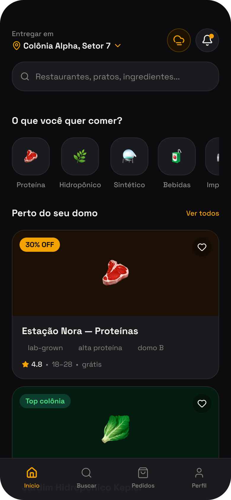
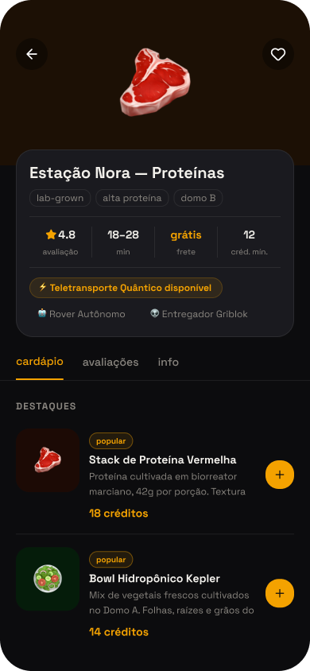
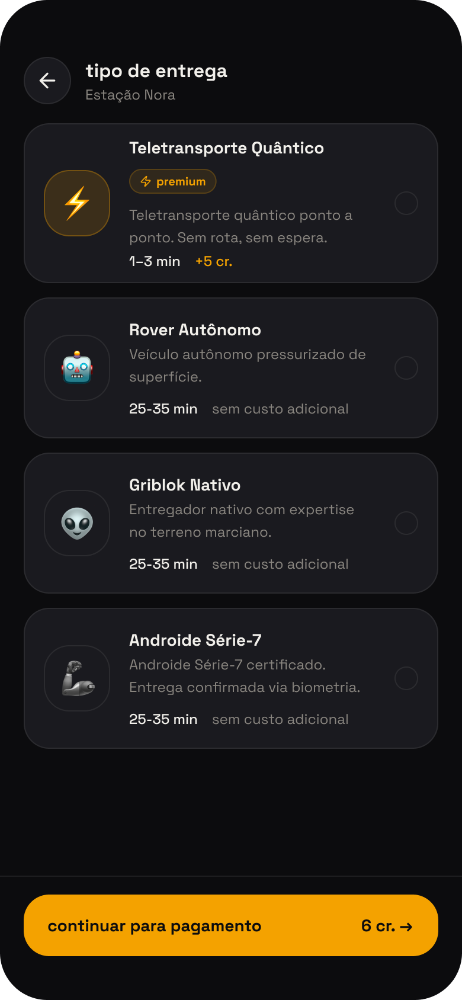
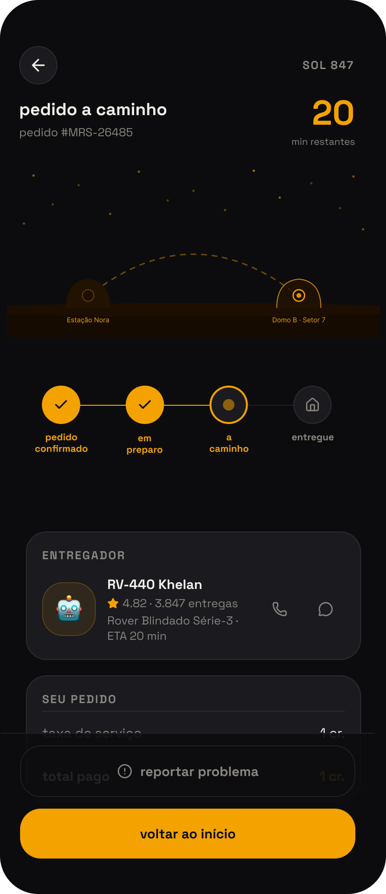
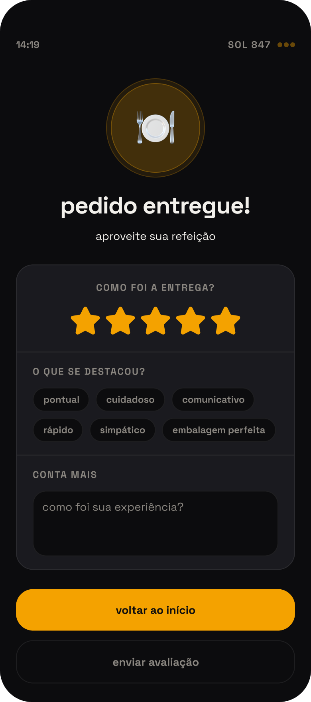
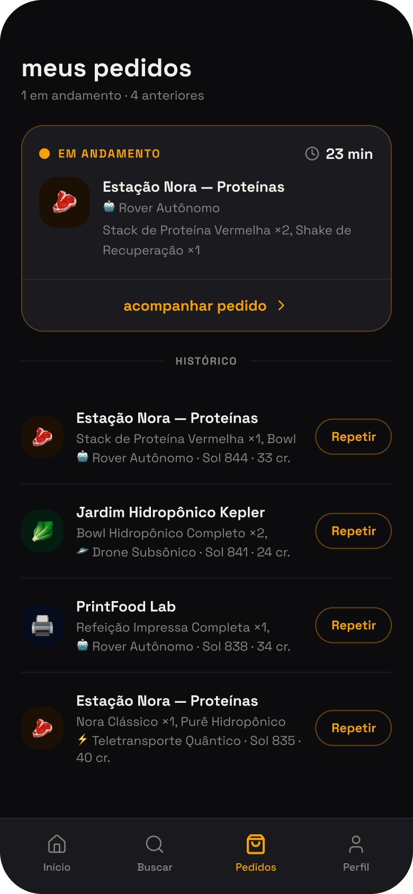

Moeda · "cr."
Real, dólar ou qualquer moeda terrestre não fazia sentido para colonizadores marcianos.
Solução: créditos marcianos, sem símbolo de real, sem centavos e sem bandeira de cartão.
Fora dos projetos para clientes, também desenho e construo produtos sozinha: design e código.


O primeiro app de delivery para colonizadores de Marte: um estudo de front-end assistido por IA, com Claude Code, Next.js 16 e Figma MCP Plugin. 12 rotas, 18 interfaces funcionais e design system documentado no Figma.
Marte tem fome. E não tem iFood. Ruas, CEPs e motoboys não existem lá: cada decisão de UX precisou ser reinventada.
Um universo do zero: moeda, tempo, endereço e entregadores, cada convenção terrestre virou um desafio de design com solução própria.
Real, dólar ou qualquer moeda terrestre não fazia sentido para colonizadores marcianos.
Solução: créditos marcianos, sem símbolo de real, sem centavos e sem bandeira de cartão.
A data terrestre, como "terça, 5 de maio", não existe fora da Terra.
Solução: SOL, o nome real de um dia marciano usado pela NASA desde as primeiras missões, substitui a data por completo.
Sem rua, sem CEP, sem bairro: nenhuma convenção terrestre de endereço se aplica.
Solução: localização por Domo, Setor e Cápsula, criada do zero para as condições dos colonizadores.
Nenhum entregador único alcança qualquer lugar em qualquer condição.
Solução: cinco tipos com restrições reais, como Rover para tempestade de areia e Teletransporte Quântico para entrega expressa.
Interfaces: 18 telas projetadas: home, restaurantes, pedido, sacola, acompanhamento, entrega e histórico.






Design system: tokens visuais
Acessibilidade testada com IA
Toda a suíte de testes de acessibilidade foi escrita e rodada com Claude Code: 27 testes automatizados com Playwright e axe-core, cobrindo teclado, contraste e ARIA em cada tela, com 0 falhas.
Princípios que guiaram as decisões: Leis de UX
Menos opções, decisão mais rápida. Cardápio agrupado por categorias e checkout com etapas lineares, sem ramificações.
Padrões conhecidos reduzem aprendizado. Navegação inferior com ícones universais e cards no padrão de apps de delivery.
Feedback em menos de 400ms. Skeleton screens, loading states e confirmação imediata ao adicionar itens na sacola.
Alvos maiores são mais fáceis de tocar. Botões primários ocupam toda a largura, com áreas de toque mínimas de 44×44px.
Gestalt em ação
Cards agrupam nome, avaliação e tempo, mantendo informações relacionadas sempre adjacentes.
Chips de categoria têm o mesmo formato; itens do pedido usam o mesmo padrão de card.
Background escuro destaca os cards, e o CTA âmbar mantém contraste 4.5:1 (WCAG AA).
Checkout linear (sacola, entrega, pagamento, confirmação) com steps visuais reforçando o progresso.
Um app para ajudar pessoas a não esquecerem de tomar seus remédios no horário certo. Organiza doses diárias, semanais, mensais ou "conforme necessário", avisa quando o estoque está acabando e mantém um histórico completo de doses tomadas e perdidas.
Fiz sozinha o design e o código: defini o fluxo de cadastro de remédios, as regras de negócio (intervalo mínimo entre doses, limite diário, alerta de estoque baixo) e construí a interface em React, com os componentes documentados no Storybook.
Esquecer uma dose parece um detalhe pequeno, mas pra quem trata uma condição crônica isso pode significar o tratamento não funcionar direito, ou até uma reação por tomar de novo sem lembrar que já tinha tomado. Pensei o DoseCerta pra ficar entre esses dois erros: nunca deixar a pessoa se perder tanto na dose esquecida quanto na dose repetida.
Regras pensadas para o dia a dia real: cada remédio pode ter frequência diária, semanal, mensal ou "conforme necessário", com intervalo mínimo entre doses e limite máximo por dia para remédios de uso livre, como analgésicos. O app também acompanha o estoque de cada remédio e avisa quando está acabando, antes que falte de verdade.
Decisões de UI e UX
Hoje mostra só o que precisa de ação agora, Remédios é onde a pessoa gerencia o que toma, e Histórico é pra olhar pra trás. Separar por tarefa em vez de por tipo de dado deixa a tela inicial simples mesmo com vários remédios cadastrados.
Cada dose tem um selo com texto (Tomado, Pendente, Atrasado) além da cor. Pensei em quem tem dificuldade pra distinguir cores, ou só está com pressa e não quer decifrar um código visual.
Remédios de uso livre, como analgésicos, têm intervalo mínimo entre doses e limite diário configuráveis. A ideia foi impedir que o próprio app sugerisse uma dose perigosa, não só lembrar de tomar.
O lembrete de dose imita o visual de uma notificação de tela bloqueada, com opção de adiar ou confirmar direto ali. Ninguém precisa aprender um padrão novo pra usar.
Histórico com exportação: todas as doses tomadas e perdidas ficam registradas por dia, com busca por nome e filtro por período, e dá pra exportar tudo em CSV, útil para levar numa consulta médica.

Próximos passos: o app web está no ar, mas para publicar nas lojas (App Store e Google Play) o projeto está sendo reconstruído em React Native (Expo), o que também vai permitir notificações confiáveis com o app fechado, essencial para lembrete de remédio no horário certo.